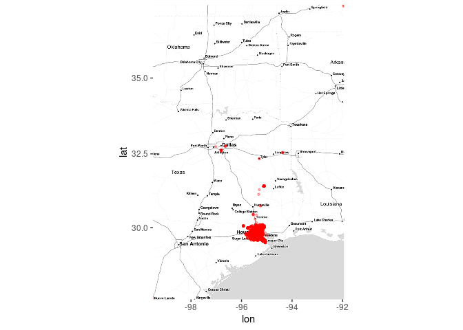
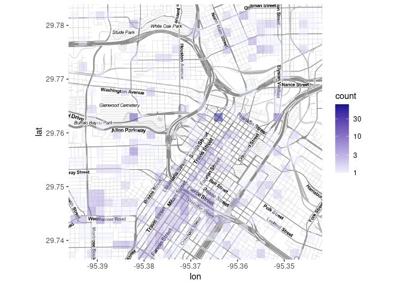
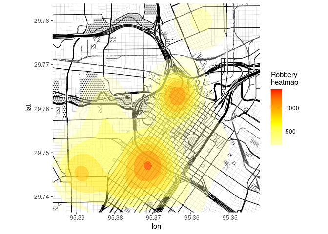
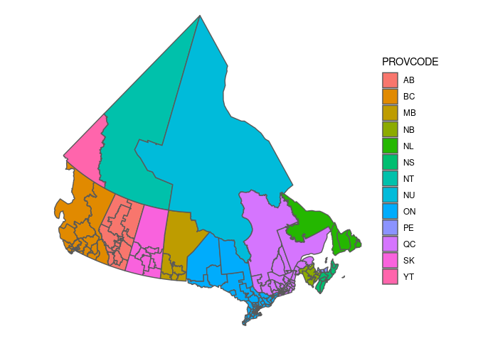
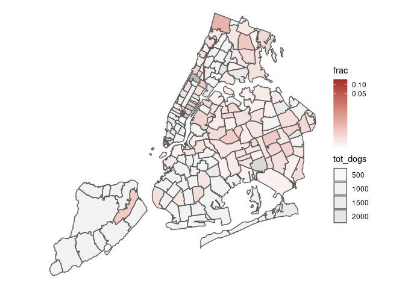

library(ggmap)
library(tidyverse)
library(viridis)
library(sf)
library(geogrid)
## Warning in fun(libname, pkgname): rgeos: versions of GEOS runtime 3.5.1-CAPI-1.9.1
## and GEOS at installation 3.5.0-CAPI-1.9.0differ
library(gganimate)
library(RColorBrewer)
library(htmlwidgets)
if (!require(transformr,quietly=TRUE)) {
warning("animation example might not work; ",
"consider running ",
"'remotes::install_github(\"thomasp85/transformr'\")")
}
library(leaflet)
load("data/googlemaps.rda")The crime dataset contains crime reports for Houston from January-August 2010, geocoded with Google Maps.
tibble(crime)
## # A tibble: 86,314 x 1
## crime$time $date $hour $premise $offense $beat $block $street
## <dttm> <chr> <int> <chr> <fct> <chr> <chr> <chr>
## 1 2010-01-01 01:00:00 1/1/… 0 18A murder 15E30 9600-… marlive
## 2 2010-01-01 01:00:00 1/1/… 0 13R robbery 13D10 4700-… teleph…
## 3 2010-01-01 01:00:00 1/1/… 0 20R aggrava… 16E20 5000-… wickvi…
## 4 2010-01-01 01:00:00 1/1/… 0 20R aggrava… 2A30 1000-… ashland
## 5 2010-01-01 01:00:00 1/1/… 0 20A aggrava… 14D20 8300-… canyon
## 6 2010-01-01 01:00:00 1/1/… 0 20R burglary 18F60 9300-… rowan
## 7 2010-01-01 01:00:00 1/1/… 0 20A burglary 10H60 2500-… southm…
## 8 2010-01-01 01:00:00 1/1/… 0 20R burglary 13D10 6300-… rupley
## 9 2010-01-01 01:00:00 1/1/… 0 20A burglary 3B10 5000-… georgi
## 10 2010-01-01 01:00:00 1/1/… 0 20P burglary 20G20 10700… briar …
## # … with 86,304 more rows, and 9 more variables: $type <chr>,
## # $suffix <chr>, $number <int>, $month <ord>, $day <ord>,
## # $location <chr>, $address <chr>, $lon <dbl>, $lat <dbl>Lots of useful info: dates, types of crimes, locations by type of place, locations by street, locations by longitude/latitude …
First, let’s get an overview of the crimes on the map. The qmplot is often recommended as a quick way to do mapping (but we will switch to another approach shortly). We put in longitude (lon) and latitude (lat) for the x and y parameters and specify crime as the data set. This plots all of the crimes in the database.
(Example adapted from here.)
q1 <- qmplot(lon, lat, data = crime,
maptype = "toner-lite",
## for q* plots need to use I() for direct specifications
colour = I("red"),
size = I(0.9),
alpha=I(.3))A slightly slower but safer method is to get the map first, then combine it with the data. This way we can retrieve the map and store it; this is both more efficient if we’re going to make a bunch of plots with the same map (almost inevitable if we’re polishing a data visualization), and safer (in case the server goes down/network connection is lost/etc.).
## utility function: extract appropriate components for retrieving a Stamen/OSM map
get_mapzone <- function(data, latcol="lat", loncol="lon") {
lon <- na.omit(data[[loncol]])
lat <- na.omit(data[[latcol]])
return(c(left=min(lon),right=max(lon),bottom=min(lat),top=max(lat)))
}
houston_mz <- get_mapzone(crime) ## find boundaries
## retrieve map
houston_map1 <- get_stamenmap(houston_mz,zoom=7, maptype="toner-lite",
messaging=FALSE)Now we can combine the map with the data set:
(ggmap(houston_map1)
+ geom_point(data=crime,colour="red",size=0.9,alpha=0.3)
)
## Warning: Removed 5 rows containing missing values (geom_point).
This graph is not very good, in particular because of the few crimes that are reported far away from the city but still end up in the database.
Reduce crime to violent crimes in downtown Houston:
violent_crime <-
(crime
%>% filter(
!offense %in% c("auto theft", "theft", "burglary"),
-95.39681 <= lon & lon <= -95.34188,
29.73631 <= lat & lat <= 29.78400
)
%>% mutate(
## drops unused levels, mitigates downstream errors
offense = fct_drop(offense),
offense = fct_relevel(offense,
c("robbery", "aggravated assault", "rape", "murder")
)
)
)
## capture.output() to force get_stamenmap to shut up ...
capture.output(
houston_map2 <- get_stamenmap(get_mapzone(violent_crime), maptype="toner-lite",
zoom=14,messaging=FALSE)
)
## Source : http://tile.stamen.com/toner-lite/14/3850/6770.png
## Source : http://tile.stamen.com/toner-lite/14/3851/6770.png
## Source : http://tile.stamen.com/toner-lite/14/3852/6770.png
## Source : http://tile.stamen.com/toner-lite/14/3850/6771.png
## Source : http://tile.stamen.com/toner-lite/14/3851/6771.png
## Source : http://tile.stamen.com/toner-lite/14/3852/6771.png
## Source : http://tile.stamen.com/toner-lite/14/3850/6772.png
## Source : http://tile.stamen.com/toner-lite/14/3851/6772.png
## Source : http://tile.stamen.com/toner-lite/14/3852/6772.png
## Source : http://tile.stamen.com/toner-lite/14/3850/6773.png
## Source : http://tile.stamen.com/toner-lite/14/3851/6773.png
## Source : http://tile.stamen.com/toner-lite/14/3852/6773.png
## character(0)
(ggmap(houston_map2)
+ geom_point(data = violent_crime, colour = "red",size = 0.9, alpha=.3)
)
Re-use the map, plotting as density contours instead (i.e., transform the points to a density field, then summarize the density field as a set of contours)
(ggmap(houston_map2)
+ geom_density2d(data = violent_crime, aes(x=lon,y=lat), col="red")
)Or do 2-D (square) binning, with a custom gradient (and log-scaled breaks):
(ggmap(houston_map2)
+ geom_bin2d(data = violent_crime, alpha=0.5)
+ scale_fill_gradient(low="#F0F0FF", high="#131393",
trans=scales::log10_trans())
)
## Warning: Removed 7 rows containing missing values (geom_tile).
The high-density square on Smith Street is messing up our ability to see much else.
To make the contour map more useful, we can assign a gradient (using a “polygon” rather than a “density_2d” geom with stat_density_2d) . Let’s look at the robberies:
## "background" rather than "lite" map
## capture.output() to force get_stamenmap to shut up ...
capture.output(
houston_map3 <- get_stamenmap(get_mapzone(violent_crime),
maptype="toner-background",
zoom=14, messaging=FALSE)
)
## Source : http://tile.stamen.com/toner-background/14/3850/6770.png
## Source : http://tile.stamen.com/toner-background/14/3851/6770.png
## Source : http://tile.stamen.com/toner-background/14/3852/6770.png
## Source : http://tile.stamen.com/toner-background/14/3850/6771.png
## Source : http://tile.stamen.com/toner-background/14/3851/6771.png
## Source : http://tile.stamen.com/toner-background/14/3852/6771.png
## Source : http://tile.stamen.com/toner-background/14/3850/6772.png
## Source : http://tile.stamen.com/toner-background/14/3851/6772.png
## Source : http://tile.stamen.com/toner-background/14/3852/6772.png
## Source : http://tile.stamen.com/toner-background/14/3850/6773.png
## Source : http://tile.stamen.com/toner-background/14/3851/6773.png
## Source : http://tile.stamen.com/toner-background/14/3852/6773.png
## character(0)
robbery <- violent_crime %>% filter(offense=='robbery')
(vc5 <- ggmap(houston_map3)
+ stat_density_2d(data=robbery,
aes(fill = ..level..), geom = "polygon",
alpha = .35, colour = NA)
+ scale_fill_gradient2("Robbery\nheatmap",
low = "white", mid = "yellow",
high = "red", midpoint = 650)
)
We can do all the other ggplot stuff, like faceting:
(ggmap(houston_map3,darken=c(0.9,"white")) ## fade map layer
+ geom_point(data = violent_crime, aes(colour = offense, size=offense))
+ facet_wrap(~ offense)
+ scale_colour_brewer(palette="Dark2")
+ scale_size_manual(values=c(1,1,2,3)) ## adjust point sizes for visibility
+ theme(legend.position="none")
)hm <- ggmap(houston_map3, base_layer = ggplot(aes(x = lon, y = lat),
data = violent_crime),
darken=c(0.9,"white"))
(hm
+ stat_density2d(aes(fill = ..level.., alpha = ..level..),
bins = 5, geom = "polygon")
+ scale_fill_gradient(low = "black", high = "red")
+ facet_wrap(~ day)
+ theme(legend.position="none")
)(there are some contouring artifacts here I don’t understand …)
This is pretty but maybe not useful …
(hm
+ stat_density2d(aes(x = lon, y = lat, fill = offense, alpha = ..level..),
bins = 5, geom = "polygon")
+ scale_fill_brewer(palette="Dark2")
)There is not a super-easy way to code scales (we’d like 29.75 to be 29∘45′N, e.g. see here for a partial solution), but maybe we don’t even need them on a map?
From this github site:
The riding boundaries come in shapefile format, which is handled by a one-liner to read_sf(). I’m going to simplify the boundaries a bit to speed up the plotting time. The dTolderance argument is in map units, and it took some experimenting to settle on the number 100.
ridings <- (read_sf("data/boundaries_2015_shp_en/FED_CA_2_2_ENG.shp")
%>% st_simplify(dTolerance = 100)
)
(ggplot(ridings)
+ geom_sf(aes(fill = PROVCODE))
+ theme_void()
)
fn <- "data/ridings_hex.rds"
if (file.exists(fn)) {
ridings_hex <- read_rds(fn)
} else {
cat("SLOW computation coming up!\n")
print(system.time({
ridings_grid <- ridings %>%
calculate_grid(grid_type = "hexagonal", seed = 1938)
ridings_hex <- assign_polygons(ridings, ridings_grid)
write_rds(ridings_hex, fn)
}))
}
fix_fun <- function(x,label) {
(x
%>% st_set_crs(NA)
%>% dplyr::select(PROVCODE,geometry)
%>% mutate(type=label)
)
}
ridings_list <- list(geographic=ridings,hex=ridings_hex)
purrr:::map(ridings_list,st_crs)
## $geographic
## Coordinate Reference System:
## No EPSG code
## proj4string: "+proj=lcc +lat_1=49 +lat_2=77 +lat_0=63.390675 +lon_0=-91.86666666666666 +x_0=6200000 +y_0=3000000 +datum=NAD83 +units=m +no_defs"
##
## $hex
## Coordinate Reference System:
## No EPSG code
## proj4string: "+proj=lcc +lat_1=49 +lat_2=77 +lat_0=63.390675 +lon_0=-91.86666666666666 +x_0=6200000 +y_0=3000000 +ellps=GRS80 +towgs84=0,0,0,0,0,0,0 +units=m +no_defs"
ridings_combined <- purrr::map2(ridings_list, names(ridings_list), fix_fun)
## dplyr::bind_rows doesn't work: https://github.com/tidyverse/dplyr/issues/2457
ridings_combined <- do.call(rbind,ridings_combined)
rplot <- ggplot(ridings_combined) +
geom_sf(aes(fill = PROVCODE)) +
theme_void()
rplot+ facet_wrap(~type)rplot_anim <- (rplot
+ transition_states(type, transition_length = 1, state_length = 5)
)
animate(rplot_anim, width = 700, height = 700, res = 96)
anim_save("pix/ridings.gif")NYC zip codes here
zc <- read_sf("data/nyc_zipcodes")
dogs <- (read_csv("data/NYC_dogs.csv")
%>% rename(zipcode="Owner Zip Code",name="Animal Name",
gender="Animal Gender",breed_1="Primary Breed",
color="Animal Dominant Color")
%>% mutate(zipcode=sprintf("%05d",zipcode))
%>% select(zipcode,name,gender,breed_1,color)
)
z_rottie <- (dogs
%>% group_by(zipcode)
%>% summarise(tot=sum(stringr::str_detect(breed_1,"[Rr]ott")),
tot_dogs=n(),
frac=tot/n())
)
z_dogs <- full_join(z_rottie,zc,by=c("zipcode"="ZIPCODE"))
(ggplot(z_dogs)
+ geom_sf(aes(fill = frac,alpha=tot_dogs, geometry=geometry))
+ theme_void()
+ scale_fill_gradient(low="white",high="brown",
trans=scales::logit_trans())
)
## Warning: Transformation introduced infinite values in discrete y-axis
Quick Houston-crime example:
## predefine colour palette
bp <- brewer.pal(name="Dark2",n=length(levels(violent_crime$offense)))
L1 <- leaflet(data=st_as_sf(violent_crime,coords=c("lon","lat"))) %>%
setView(-95.35,29.75,zoom=13) %>%
## use Stamen/toner rather than default Open Street Maps tiles
addProviderTiles(providers$Stamen.Toner,
options = providerTileOptions(opacity = 0.35)) %>%
addCircleMarkers(radius=5,weight=2,
color=~bp[offense],
popup=~date)
saveWidget(L1,file="houston_leaflet.html")embedding info here:
akimamgcv package then overlay?scatterpie package. (Mini-bars?)